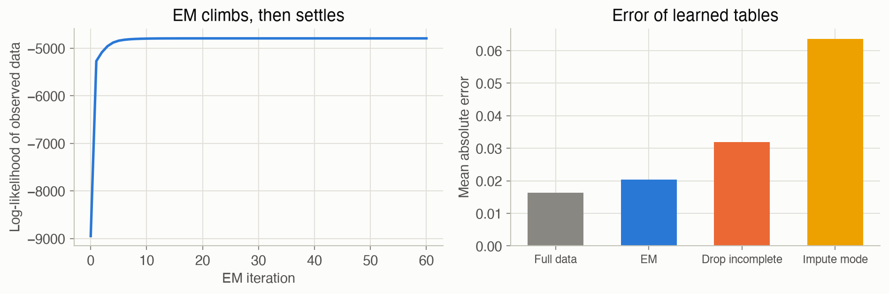

4 · Parameter Learning
Part I — Probabilistic Reasoning
Big picture
Where this chapter fits
Chapter 2 described a world with a Bayesian network: a graph, plus a table of probabilities for each variable. Chapter 3 used those tables to answer questions. Both chapters simply assumed the numbers were known: \(P(\text{storm}) = 0.1\), \(P(\text{jam} \mid \text{storm}) = 0.7\), and so on. In practice nobody hands you those numbers. You have data: a log of past mornings. This chapter turns data into the numbers.
The structure of the graph is still assumed known here; Chapter 5 learns that too. And the same ideas come back whenever an agent must learn a model from experience, most directly in model-based reinforcement learning (Ch 16), which learns transition probabilities by counting.
The question: given a record of past observations, what should the probabilities in my model be, and how sure should I be about them?
The key ideas at a glance
Parameters and the likelihood. A model’s numbers are its parameters, written \(\theta\) (theta). The likelihood of a set of parameters is the probability they assign to the data you actually saw. Good parameters make the observed data likely. Because the probabilities of independent records multiply, and multiplying many small numbers is awkward, we work with the log-likelihood, a sum of logs.
Maximum likelihood (ML) is counting. The parameters that make the data most likely are just the observed frequencies. If a jam happened on 3 of 5 roadwork mornings, the estimate of \(P(\text{jam} \mid \text{roadwork})\) is \(3/5\). For a Bayesian network, every row of every table is estimated separately, from the records that match that row’s parent values. For a Gaussian, ML gives the sample mean and the average squared deviation. ML is simple and becomes exact with enough data. With little data it overreacts: a combination seen once gets probability 1, and one never seen gets no estimate at all.
Bayesian learning adds prior knowledge as pretend data. Instead of a single best number, keep a whole distribution over the parameter. For a yes/no probability that distribution is the Beta distribution, and updating it is just adding: start with \(\alpha\) pretend “yes” and \(\beta\) pretend “no” observations (the pseudocounts), then add the real counts. The estimate becomes (yes + pseudo-yes) / (all + pseudo-all). It never reaches exactly 0 or 1, and it is sensible even with no data. The Dirichlet distribution does the same for variables with more than two values.
Nonparametric learning lets the data set the shape. Sometimes no simple shape fits. Commute times are a lump of normal days plus a lump of jam days, and a single bell curve would sit between the lumps. Kernel density estimation puts a small bump on every data point and adds them up. The only choice is the bump width, the bandwidth: too narrow and you get spikes, too wide and you blur the lumps together.
Missing data: don’t guess once, guess softly and repeat. Real logs have gaps: some mornings nobody recorded whether there was a storm. Dropping incomplete records wastes data. Filling each gap with the most common value biases the answer. Expectation-maximization (EM) fills each gap with fractional counts (“this morning was 97% storm, 3% no storm”, computed by inference from Chapter 3). It then re-estimates the parameters from those counts and repeats. Each round can only make the data more likely, and it settles close to what complete data would have given.
Vocabulary
| Term | Plain meaning |
|---|---|
| Parameters \(\theta\) | The numbers in a model, such as the entries of a CPT |
| Likelihood | How probable the observed data is under particular parameters |
| Maximum likelihood estimate | The parameters that make the data most probable: observed frequencies |
| Prior / posterior | Belief about the parameters before / after seeing the data |
| Pseudocounts | The prior, expressed as pretend observations added to the real counts |
| Conjugate prior | A prior whose posterior has the same form, like Beta → Beta, so updating is just adding counts |
| Bandwidth | The width of each bump in kernel density estimation |
| Imputation | Filling in missing values |
| E-step / M-step | EM’s two halves: Expected counts from the current model, then Maximum-likelihood re-estimation |
After this chapter you can
- Estimate every table of a Bayesian network from data by counting, and know when that goes wrong.
- Choose a prior, read it as pseudocounts, and see how much it matters for a given amount of data.
- Fit a Gaussian by maximum likelihood, or a shape-free density with a kernel.
- Learn from records with missing values using EM, and explain why it beats dropping or guessing.
Intuition
TipAnalogy
You’re judging a new café from its customer ratings.
- Maximum likelihood: average the ratings. With 200 ratings that’s excellent. With one rating of 5 stars, it claims the café is perfect.
- Bayesian: start from what a typical café scores, say 3.5 stars, and count that as if it were a few ratings. One 5-star review nudges you up a little; 200 of them overwhelm your starting belief. The more data, the less the prior matters.
- Kernel density: instead of one average, draw the whole spread of ratings, smoothing the raw tally so that a 4.5 also lends a little weight to 4 and 5.
- Missing data: some reviews lost their star rating but kept their text. Rather than ignore them, you read each text, estimate “probably 4 stars, maybe 3”, count each review fractionally, and refine your reading of the texts as your picture of the café sharpens. That is EM.
Maximum likelihood: the frequencies you saw
Suppose 20 logged mornings split by storm and roadwork like this: 12 mornings with neither (1 jam), 5 with roadwork only (3 jams), 3 with a storm only (2 jams), and none with both. Maximum likelihood estimates \(P(\text{jam})\) for each combination as jams / mornings: \(1/12\), \(3/5\), \(2/3\), and for “both”, \(0/0\), no estimate at all. The first three are sensible, if noisy. The last shows ML’s weak spot: it has nothing to say about situations the data never covered. Formally, this is Equation 2.
Bayesian learning: pseudocounts pull toward the prior
Add one pretend jam and one pretend no-jam to every row, a uniform prior. The estimates become \(2/14 = 0.14\), \(4/7 = 0.57\), \(3/5 = 0.60\), and \(1/2 = 0.50\) for the never-seen row. Rows with lots of data barely move; rows with little data move toward 0.5; the empty row gets a cautious 0.5 instead of nothing. Stronger priors (more pseudocounts) pull harder. That’s Equation 4 and Equation 5.
Kernel density: a bump on every point
With 200 recorded commute times, a single Gaussian fit centers near 35 minutes. Yet almost no commute takes 35 minutes: normal days cluster near 30, jam days near 50. A kernel density estimate puts a small bell curve on each of the 200 times and adds them up, and the two clusters appear on their own. Try the bandwidth slider below. That’s Equation 6.
EM: soft guesses, refined
A morning’s record says “late, radio alert, jam, no roadwork”, but the storm entry is blank. Given the current model, a storm explains that record far better than no storm: \(P(\text{storm} \mid \text{the rest}) \approx 0.97\) (see the worked example). So EM counts this morning as 0.97 of a storm morning and 0.03 of a calm one. After doing that for every blank, it re-estimates the tables from these fractional counts, which changes the next round’s guesses slightly, and so on until nothing changes. That’s Equation 7.
Formalism
The likelihood
Let the data be \(m\) independent records \(x_1, \ldots, x_m\) and the parameters \(\theta\) (ADM §4.1).
\[ \ell(\theta) = \log P(x_{1:m} \mid \theta) = \sum_{i=1}^{m} \log P(x_i \mid \theta) \tag{1}\]
In words. Score a set of parameters by how probable they make the observed data. Use logs so the product over records becomes a sum.
Term by term.
- \(P(x_i \mid \theta)\) is the probability of record \(i\) under the parameters \(\theta\). For a Bayesian network, it’s the chain-rule product from Ch 2.
- The records are assumed independent, so their probabilities multiply. The log turns that product into a sum, which is numerically safer and easier to maximize.
- Maximizing \(\ell\) and maximizing the likelihood itself give the same \(\theta\), because log is increasing.
Maximum likelihood
For a discrete variable in a Bayesian network, let \(m_{ijk}\) be the number of records in which variable \(i\) takes its \(k\)-th value while its parents take their \(j\)-th combination of values.
\[ \hat\theta_{ijk} = \frac{m_{ijk}}{\sum_{k'} m_{ijk'}} \tag{2}\]
In words. The estimated probability of each value, for each combination of parent values, is how often it happened divided by how often that parent combination happened.
Term by term.
- \(i\) picks the variable (say, “jam”), \(j\) the parent combination (say, “storm, no roadwork”), \(k\) the value (say, “yes”).
- The denominator counts every record with that parent combination. If it’s 0, the estimate is undefined (0/0).
- The hat on \(\hat\theta\) marks an estimate.
Why it holds. The log-likelihood of a Bayesian network splits into one separate term per table row: \(\sum_{ijk} m_{ijk} \log \theta_{ijk}\). Each row’s probabilities must sum to 1. Maximizing \(\sum_k m_k \log \theta_k\) subject to \(\sum_k \theta_k = 1\) (with a Lagrange multiplier) gives \(\theta_k \propto m_k\): proportional to the counts.
For continuous data assumed Gaussian, the same principle gives:
\[ \hat\mu = \frac{1}{m} \sum_{i=1}^{m} x_i \qquad \hat\sigma^2 = \frac{1}{m} \sum_{i=1}^{m} (x_i - \hat\mu)^2 \tag{3}\]
In words. The best-fitting bell curve is centered at the average, and its variance is the average squared distance from that average.
Term by term. \(\hat\sigma^2\) divides by \(m\), not \(m - 1\). It’s slightly too small on average, because \(\hat\mu\) was fitted to the same data, a bias that fades as \(m\) grows. The familiar “sample variance” divides by \(m - 1\) to remove it.
Bayesian parameter learning
Treat the unknown parameter itself as uncertain, and keep a distribution over it (ADM §4.2). For a probability \(\theta\) of “yes”:
\[ \mathrm{Beta}(\theta \mid \alpha, \beta) \propto \theta^{\alpha - 1} (1 - \theta)^{\beta - 1} \quad\xrightarrow{\;m_1 \text{ yes},\ m_0 \text{ no}\;}\quad \mathrm{Beta}(\theta \mid \alpha + m_1,\ \beta + m_0), \qquad \mathbb{E}[\theta] = \frac{\alpha + m_1}{\alpha + \beta + m_1 + m_0} \tag{4}\]
In words. A Beta distribution describes belief about a probability. Seeing data just adds the counts of yes and no to its two parameters. Its mean is “yes” counts over total counts, real plus pretend.
Term by term.
- \(\theta^{\alpha - 1}(1-\theta)^{\beta-1}\) is the shape: it peaks near \(\frac{\alpha - 1}{\alpha + \beta - 2}\), and it is flat when \(\alpha = \beta = 1\).
- The data’s likelihood is \(\theta^{m_1}(1-\theta)^{m_0}\). Multiplying it into the prior adds the exponents, and that’s the whole update. A prior that stays in the same family after updating is called conjugate.
- \(\alpha\) and \(\beta\) act as pseudocounts: pretend observations of yes and no. \(\alpha + \beta\) is how many observations the prior is “worth”.
- \(\mathbb{E}[\theta]\) is the posterior mean, the usual single-number estimate. It lies between the prior mean \(\frac{\alpha}{\alpha+\beta}\) and the ML estimate \(\frac{m_1}{m_1 + m_0}\), moving toward the latter as data accumulates.
For a variable with \(n\) values, the Beta generalizes to the Dirichlet:
\[ \mathrm{Dir}(\theta_{1:n} \mid \alpha_{1:n}) \propto \prod_{k=1}^{n} \theta_k^{\alpha_k - 1} \qquad \mathbb{E}[\theta_k \mid \text{data}] = \frac{\alpha_k + m_k}{\sum_{k'} (\alpha_{k'} + m_{k'})} \tag{5}\]
In words. Same idea, more categories: one pseudocount per value, and the estimate is (pseudocount + count) over the total.
Term by term. \(\theta_{1:n}\) are the \(n\) probabilities, summing to 1. \(\alpha_k\) is value \(k\)’s pseudocount. With every \(\alpha_k = 1\) (the uniform prior), the posterior mean is Laplace smoothing: add one to every count. For a Bayesian network, each row of each table gets its own Dirichlet, updated with that row’s counts \(m_{ijk}\).
Nonparametric learning
When no fixed shape is right, let the data define the density (ADM §4.3):
\[ \hat p(x) = \frac{1}{m} \sum_{i=1}^{m} \phi(x - x_i), \qquad \phi(d) = \mathcal{N}(d \mid 0, h^2) \tag{6}\]
In words. Place a small bell curve on every data point, and average them.
Term by term.
- \(\phi\) is the kernel, the shape of each bump; here a Gaussian.
- \(h\) is the bandwidth, the bump width. It trades detail against noise: small \(h\) follows every quirk of the sample, large \(h\) blurs real structure away.
- Averaging \(m\) densities that each integrate to 1 gives a density that integrates to 1.
- Nothing is fitted, but every data point must be kept, and evaluating \(\hat p\) costs \(O(m)\).
Learning with missing data
When some values are missing (ADM §4.4), the likelihood sums over every way the missing values could have been filled in. There’s no counting formula for it any more. Expectation-maximization climbs it by alternating two easy steps:
\[ \text{E-step: } \hat m_{ijk} = \sum_{\text{records } r} P\big(x_i = k,\ \mathrm{pa}_i = j \mid \text{observed part of } r,\ \theta\big) \qquad \text{M-step: } \theta_{ijk} \leftarrow \frac{\hat m_{ijk}}{\sum_{k'} \hat m_{ijk'}} \tag{7}\]
In words. E-step: using the current parameters, work out how likely each possible fill-in of each record’s gaps is, and add up fractional counts. M-step: re-estimate the parameters from those counts exactly as in Equation 2. Repeat.
Term by term.
- For a record with nothing missing, the probability is 1 for the observed values and 0 otherwise, so it contributes whole counts, as before.
- For a record with gaps, it’s an inference query from Ch 3: \(P(\text{missing} \mid \text{observed})\).
- \(\hat m_{ijk}\) are expected counts, possibly fractional.
Why it works. Each EM iteration never decreases the log-likelihood of the observed data. It stops at a (possibly local) maximum, so different starting points can end in different places.
Two simpler alternatives are dropping incomplete records, which is unbiased when values go missing at random but wastes data, and imputation, filling each gap with a single guess. Imputing the most common value is simplest, but it systematically distorts the data.
Worked example
Counting a table by hand
The 20 mornings from the Intuition section give these counts for the jam variable, and these estimates:
| Storm, roadwork | Mornings | Jams | ML Equation 2 | Bayes, uniform prior Equation 5 |
|---|---|---|---|---|
| no, no | 12 | 1 | \(1/12 = 0.08\) | \(2/14 = 0.14\) |
| no, yes | 5 | 3 | \(3/5 = 0.60\) | \(4/7 = 0.57\) |
| yes, no | 3 | 2 | \(2/3 = 0.67\) | \(3/5 = 0.60\) |
| yes, yes | 0 | 0 | undefined | \(1/2 = 0.50\) |
A Beta posterior by hand
A new bus route has been late on 3 of its first 10 runs.
- ML: \(3/10 = 0.30\).
- Uniform prior Beta(1, 1): the posterior is Beta(4, 8), with mean \(4/12 = 0.33\).
- A prior centered on 50%, worth 10 runs, Beta(5, 5): the posterior is Beta(8, 12), with mean \(8/20 = 0.40\).
The stronger the prior, the more 10 runs are pulled toward its center. Try other values in the interactive below.
Gaussian maximum likelihood by hand
Five commutes: 30, 34, 29, 52 and 35 minutes. By Equation 3, \(\hat\mu = 180/5 = 36\) and \(\hat\sigma^2 = (36 + 4 + 49 + 256 + 1)/5 = 69.2\), a standard deviation of 8.3 minutes. The single 52-minute trip, likely a jam day, pulls the mean up and inflates the spread. That’s a hint that one bell curve is the wrong shape here.
One EM step by hand
A record has the storm value missing: late, radio alert, jam, no roadwork. Under the true tables, the probability of each fill-in is proportional to the chain-rule product. Factors that don’t involve the storm are the same for both fill-ins and cancel.
- Storm: \(P(s^1)\, P(j^1 \mid s^1, r^0)\, P(a^1 \mid s^1) = 0.1 \times 0.7 \times 0.95 = 0.0665\)
- No storm: \(P(s^0)\, P(j^1 \mid s^0, r^0)\, P(a^1 \mid s^0) = 0.9 \times 0.1 \times 0.02 = 0.0018\)
So \(P(s^1 \mid \text{record}) = 0.0665 / 0.0683 = 0.974\). This record adds 0.974 to the storm counts and 0.026 to the no-storm counts, in every table the storm variable appears in.
| Fill-in | Joint probability | Weight (P given the record) |
|---|---|---|
| storm = no | 0.000720 | 0.026 |
| storm = yes | 0.026600 | 0.974 |
(The joint probabilities include the factors that cancel, so they’re smaller than the hand numbers; the weights are the same.)
Interactive
Beta posterior explorer
Set a Beta prior with its pseudocounts, then add data. Watch the posterior move from the prior toward the data as the counts grow. With little data the prior dominates; with a lot, it barely matters.
Kernel bandwidth
Two hundred commute times: three quarters normal days near 30 minutes, one quarter jam days near 50. The dashed curve is the single Gaussian fitted by maximum likelihood. It puts its peak where almost no commute actually falls. Change the kernel bandwidth \(h\) and look for the value that shows two lumps without turning noisy.
Algorithms & code
Data is a list of records, each a dictionary from variable to value, with None for a missing value.
Counting, maximum likelihood, and Bayesian estimates
def count_table(card: dict, parents: dict, data: list) -> dict:
"""m_ijk: how often variable i took value k with its parents in
configuration j. counts[x] has the same shape as x's CPT.
A record is skipped for x if x or any of its parents is missing.
"""
counts = {x: np.zeros([card[q] for q in pa] + [card[x]])
for x, pa in parents.items()}
for record in data:
for x, pa in parents.items():
family = [record[q] for q in pa] + [record[x]]
if None not in family:
# The family's values index one cell: parents..., then x.
counts[x][tuple(family)] += 1
return counts
def normalize_rows(counts: np.ndarray) -> np.ndarray:
"""Turn counts into a CPT: divide each row (last axis) by its total.
A parent configuration with no data has no estimate (0/0), so its row
falls back to uniform.
"""
totals = counts.sum(axis=-1, keepdims=True)
uniform = np.full_like(counts, 1 / counts.shape[-1])
safe = np.where(totals > 0, totals, 1) # avoid dividing by 0
return np.where(totals > 0, counts / safe, uniform)
def ml_estimate(card: dict, parents: dict, data: list) -> BayesNet:
"""Maximum likelihood: each CPT row is the observed frequencies,
theta_ijk = m_ijk / sum_k m_ijk."""
counts = count_table(card, parents, data)
cpt = {x: normalize_rows(m) for x, m in counts.items()}
return BayesNet(dict(card), dict(parents), cpt)
def bayes_estimate(card: dict, parents: dict, data: list,
alpha: float = 1.0) -> BayesNet:
"""Posterior mean under a Dirichlet prior that adds `alpha` pseudocounts
to every cell: (m_ijk + alpha) / sum_k (m_ijk + alpha).
alpha = 1 is the uniform prior; a larger alpha pulls estimates harder
toward uniform, which matters most for rarely seen parent values.
"""
counts = count_table(card, parents, data)
cpt = {x: normalize_rows(m + alpha) for x, m in counts.items()}
return BayesNet(dict(card), dict(parents), cpt)
def beta_update(alpha: float, beta: float, successes: int, failures: int):
"""Beta(alpha, beta) prior + data -> Beta posterior. Each observation
adds one to the matching parameter, which is why the prior's alpha and
beta act like counts seen before the data (pseudocounts)."""
return alpha + successes, beta + failuresusing ADM, Distributions, Random
# A dataset is a vector of records: Dicts from variable to value (1, 2, ...) or `missing`.
# m_ijk: counts with the same shape as each CPT (parent values..., own value).
function count_table(card, parents, data)
counts = Dict(x => zeros((card[q] for q in pa)..., card[x]) for (x, pa) in parents)
for r in data, (x, pa) in parents
family = [[r[q] for q in pa]; r[x]]
# Skip the record for x if x or a parent is missing; otherwise add 1 to that cell.
any(ismissing, family) || (counts[x][family...] += 1)
end
return counts
end
# Divide each row (the last axis) by its total. A row with no data has no estimate
# (0/0), so it falls back to uniform. max.(…, eps()) just avoids dividing by zero.
function normalize_rows(counts)
totals = sum(counts; dims = ndims(counts))
return ifelse.(totals .> 0, counts ./ max.(totals, eps()), 1 / size(counts, ndims(counts)))
end
tables(counts) = Dict{Symbol, Array{Float64}}(x => normalize_rows(m) for (x, m) in counts)
# Maximum likelihood: observed frequencies.
ml_estimate(card, parents, data) = BayesNet(card, parents, tables(count_table(card, parents, data)))
# Posterior mean under a Dirichlet prior: add α pseudocounts to every cell.
bayes_estimate(card, parents, data; α = 1.0) =
BayesNet(card, parents, tables(Dict(x => m .+ α for (x, m) in count_table(card, parents, data))))
# Beta(α, β) + (successes, failures) → Beta(α + successes, β + failures).
beta_update(α, β, successes, failures) = (α + successes, β + failures)Gaussian maximum likelihood and kernel density estimation
def gaussian_ml(x) -> tuple:
"""ML mean and variance of 1-D data. The ML variance divides by m,
not m - 1, so it is slightly smaller than the "sample variance"."""
x = np.asarray(x, dtype=float)
mu = x.mean()
return mu, np.mean((x - mu) ** 2)
def kernel_density(samples, bandwidth: float):
"""p(x) = (1/m) sum_i N(x | x_i, h^2): a Gaussian bump of width h on
every data point. Returns a function of x (a number or an array)."""
samples = np.asarray(samples, dtype=float)
def p(x):
# The extra axis (None) pairs every x with every sample, so z has
# shape (..., m); averaging over the last axis sums the m bumps.
z = (np.asarray(x, dtype=float)[..., None] - samples) / bandwidth
bumps = np.exp(-0.5 * z**2) / (bandwidth * np.sqrt(2 * np.pi))
return bumps.mean(axis=-1)
return p# ML mean, and variance that divides by m (not m - 1).
function gaussian_ml(x)
μ = sum(x) / length(x)
return μ, sum(abs2, x .- μ) / length(x) # abs2(d) = d^2
end
# Returns a function: the average of Gaussian bumps of width h centered on the samples.
kernel_density(samples, h) =
x -> sum(exp(-((x - xi) / h)^2 / 2) for xi in samples) / (length(samples) * h * sqrt(2π))Imputation and expectation-maximization
_completions lists every way to fill in a record’s gaps, with each filled-in record’s probability under the chain rule. The E-step normalizes those probabilities within each record to get fractional counts.
def impute_mode(data: list) -> list:
"""Fill each missing value with that variable's most common observed
value. Simple, but it biases the data toward the common case."""
names = data[0].keys()
mode = {}
for x in names:
seen = [r[x] for r in data if r[x] is not None]
mode[x] = max(set(seen), key=seen.count)
return [{x: mode[x] if r[x] is None else r[x] for x in names}
for r in data]
def _completions(bn: BayesNet, record: dict):
"""Every way to fill in a record's missing values, with each filled-in
record's probability under the network (chain rule)."""
missing = [x for x, v in record.items() if v is None]
for values in product(*(range(bn.card[x]) for x in missing)):
full = {**record, **dict(zip(missing, values))}
yield full, probability(bn, full)
def log_likelihood(bn: BayesNet, data: list) -> float:
"""l(theta) = sum over records of log P(observed values), where the
missing values are summed out."""
return sum(np.log(sum(p for _, p in _completions(bn, r))) for r in data)
def expected_counts(bn: BayesNet, data: list) -> dict:
"""E-step: counts in which each missing value is split across its
possible values, in proportion to their probability given the rest of
the record under the current network."""
counts = {x: np.zeros_like(t) for x, t in bn.cpt.items()}
for record in data:
fills = list(_completions(bn, record))
total = sum(p for _, p in fills)
for full, p in fills:
weight = p / total # P(this completion | observed values)
for x, pa in bn.parents.items():
counts[x][tuple(full[q] for q in pa) + (full[x],)] += weight
return counts
def expectation_maximization(bn0: BayesNet, data: list, iterations: int = 30):
"""Alternate E (expected counts under the current network) and M
(re-estimate every CPT from those counts, as in maximum likelihood).
Returns the final network and the log-likelihood before and after each
iteration; each iteration can only raise it or leave it unchanged.
"""
bn, history = bn0, [log_likelihood(bn0, data)]
for _ in range(iterations):
counts = expected_counts(bn, data)
cpt = {x: normalize_rows(m) for x, m in counts.items()}
bn = BayesNet(bn.card, bn.parents, cpt)
history.append(log_likelihood(bn, data))
return bn, history# Fill each gap with the variable's most common observed value.
function impute_mode(data)
mode = Dict(x => begin
seen = collect(skipmissing(r[x] for r in data))
vals = unique(seen)
vals[argmax([count(==(v), seen) for v in vals])]
end for x in keys(first(data)))
return [Dict{Symbol, Union{Int, Missing}}(x => ismissing(v) ? mode[x] : v for (x, v) in r) for r in data]
end
# Every way to fill in a record's missing values, with its probability (chain rule).
# Iterators.product over the missing variables' ranges lists every combination
# (one empty combination when nothing is missing).
function completions(bn, r)
gaps = [x for (x, v) in r if ismissing(v)]
return vec(map(Iterators.product((1:bn.card[x] for x in gaps)...)) do vals
full = merge(r, Dict(zip(gaps, vals)))
(full, probability(bn, full))
end)
end
log_likelihood(bn, data) = sum(log(sum(p for (_, p) in completions(bn, r))) for r in data)
# E-step: split each record across its completions, weighted by P(completion | observed).
function expected_counts(bn, data)
counts = Dict(x => zero(t) for (x, t) in bn.cpt)
for r in data
fills = completions(bn, r)
total = sum(p for (_, p) in fills)
for (full, p) in fills, (x, pa) in bn.parents
counts[x][(full[q] for q in pa)..., full[x]] += p / total
end
end
return counts
end
# Alternate E (expected counts) and M (normalize them, as in maximum likelihood).
function expectation_maximization(bn, data; iterations = 30)
history = [log_likelihood(bn, data)]
for _ in 1:iterations
bn = BayesNet(bn.card, bn.parents, tables(expected_counts(bn, data)))
push!(history, log_likelihood(bn, data))
end
return bn, history
endRun them on simulated mornings
from adm.problems.commute import COMMUTE, PARENTS
rng = np.random.default_rng(4)
mornings = sample_dataset(COMMUTE, 3000, rng) # complete records
ml = ml_estimate(COMMUTE.card, PARENTS, mornings)
bayes = bayes_estimate(COMMUTE.card, PARENTS, mornings, alpha=1.0)
# Hide the storm value in 70% of the records, then learn with EM from uniform tables.
partial = hide(mornings, "S", 0.7, rng)
start = bayes_estimate(COMMUTE.card, PARENTS, []) # no data: all rows uniform
em, history = expectation_maximization(start, partial, iterations=60)# Direct sampling (Ch 3): draw each variable given its already-drawn parents.
function topological_order(parents)
order = Symbol[]
while length(order) < length(parents)
for (x, pa) in parents
!(x in order) && all(p in order for p in pa) && push!(order, x)
end
end
return order
end
function sample_dataset(bn, m, rng)
order = topological_order(bn.parents)
return map(1:m) do _
r = Dict{Symbol, Union{Int, Missing}}()
for x in order
r[x] = rand(rng, Categorical(bn.cpt[x][(r[q] for q in bn.parents[x])..., :]))
end
r
end
end
commute = commute_network()
rng = MersenneTwister(4)
mornings = sample_dataset(commute, 2000, rng)
ml = ml_estimate(commute.card, commute.parents, mornings)
@assert abs(ml.cpt[:S][2] - 0.1) < 0.03
@assert bayes_estimate(commute.card, commute.parents, []).cpt[:J][1, 1, :] ≈ [0.5, 0.5]
@assert beta_update(1, 1, 3, 7) == (4, 8)
@assert gaussian_ml([30.0, 34, 29, 52, 35]) == (36.0, 69.2)
partial = [rand(rng) < 0.7 ? merge(r, Dict(:S => missing)) : r for r in mornings]
start = bayes_estimate(commute.card, commute.parents, [])
em, history = expectation_maximization(start, partial; iterations = 40)
@assert all(diff(history) .>= -1e-9) # EM never lowers the likelihood
@assert abs(em.cpt[:S][2] - ml.cpt[:S][2]) < 0.03P(storm): true 0.100 ML 0.095 Bayes 0.095 EM (70% missing) 0.099
P(alert | storm): true 0.950 ML 0.937 Bayes 0.934 EM (70% missing) 0.924
EM log-likelihood: -8949.2 at the start, -4794.4 after 60 iterations
NoteReading the Julia code (for Python programmers)
missingis Julia’s built-in marker for a missing value.ismissing(v)tests for it, andskipmissing(xs)iterates past it.Union{Int, Missing}means “an integer or missing”.ifelse.(cond, a, b)is the element-wise version ofcond ? a : b, likenp.where(cond, a, b).Iterators.product(r1, r2, …)lists every combination, likeitertools.product.begin … endgroups several lines into one expression; here it computes each variable’s mode inside a dictionary comprehension.x -> …is an anonymous function, sokernel_densityreturns a function, just as the Python version does.
Results
Learning a table as data arrives
Figure 4 feeds mornings to the learner one batch at a time and tracks two entries of the jam table. The common case, no storm and no roadwork, is learned quickly. The rare case, storm and roadwork, happens on only 2% of mornings. Maximum likelihood has nothing to go on for about 100 mornings. After its first few examples, all jams, it claims certainty (1.0) for hundreds more mornings. The Bayesian estimate starts at a cautious 0.5 and rises gradually. By about 1,000 mornings, when the row has been seen about 20 times, the two agree. Both end a little below 0.9, because even 10,000 mornings contain only about 200 storm-and-roadwork examples.
![Two panels with a logarithmic horizontal axis of mornings observed, from 10 to 10,000. Left, the common no-storm, no-roadwork row: both estimates settle near the true value 0.1 after a few hundred mornings. Right, the rare storm-and-roadwork row: the maximum likelihood line sits at the 0.5 fallback until about 100 mornings, jumps to 1.0 and stays there until about 700, then settles between 0.8 and 0.9; the Bayesian line also starts at 0.5 but rises gradually, and the two agree from about 1,000 mornings on.](ch04-parameter-learning_files/figure-html/fig-learning-curve-output-1.png)
Missing data: EM against the alternatives
Figure 5 hides the storm value in 70% of the records. The left panel shows EM’s log-likelihood climbing and settling. The right panel compares four ways of learning the storm-related tables, averaged over 12 simulated datasets of 1,000 mornings:
- having all the data (the best possible);
- EM;
- dropping incomplete records;
- filling each gap with the most common value.

EM’s error is only about 25% higher than with complete data, even though it sees only 30% of the storm values. Dropping records is unbiased here, because values were hidden at random, but it throws away most of the evidence. Mode imputation is the worst. “No storm” is by far the most common value, so it fills every gap with it, and that makes storms look three times rarer than they are.
Solved problems
Problem 1: ML and Bayes for one row. In the coffee machine of Ch 3, you service 8 machines that turn out to have scale buildup, and 2 of them were making a loud noise. Estimate \(P(\text{noise} \mid \text{scale})\) by maximum likelihood, and as a posterior mean with a uniform Beta(1, 1) prior.
TipSolution
ML: \(2/8 = 0.25\). Bayesian: the posterior is Beta(1 + 2, 1 + 6) = Beta(3, 7), with mean \(3/10 = 0.30\). The prior’s two pseudocounts pull the estimate slightly toward 0.5. With 80 machines and 20 noisy ones, the posterior mean would be \(21/82 = 0.256\), almost the ML value.
Problem 2: what a prior is worth. An expert says a sensor fails about 10% of the time, and you encode that as Beta(1, 9). (a) How many observations is the prior worth? (b) You then test 10 sensors and all 10 fail. What’s the posterior mean?
TipSolution
\(\alpha + \beta = 10\) pseudo-observations.
The posterior is Beta(1 + 10, 9 + 0) = Beta(11, 9), with mean \(11/20 = 0.55\). Ten real observations weigh as much as the whole prior, so the estimate lands halfway between 0.1 and the data’s 1.0. If you trust the expert more, encode the same 10% as Beta(10, 90), worth 100 observations. Then the posterior mean is \(20/110 = 0.18\).
Problem 3: the ML variance is biased. For the data 2, 4, 6, compute the maximum likelihood variance and the “sample variance” that divides by \(m - 1\). Why does ML come out smaller?
TipSolution
\(\hat\mu = 4\), and the squared deviations are 4, 0 and 4, summing to 8. ML: \(8/3 \approx 2.67\). Sample variance: \(8/2 = 4\).
ML measures spread around \(\hat\mu\), the center that fits this sample best. That is always at least as close to the data as the true mean. So squared deviations from \(\hat\mu\) understate the real spread on average, by exactly the factor \((m-1)/m\). The difference fades as \(m\) grows.
Problem 4: one E-step, other evidence. A record has the storm value missing: roadwork, a jam, not late, no radio alert. Using the true commute tables, how much does this record add to the storm counts?
TipSolution
Keep only the factors that involve the storm (the others cancel):
- Storm: \(0.1 \times P(j^1 \mid s^1, r^1) \times P(a^0 \mid s^1) = 0.1 \times 0.9 \times 0.05 = 0.0045\)
- No storm: \(0.9 \times P(j^1 \mid s^0, r^1) \times P(a^0 \mid s^0) = 0.9 \times 0.6 \times 0.98 = 0.5292\)
\(P(s^1 \mid \text{record}) = 0.0045 / 0.5337 \approx\) 0.008. The missing radio alert is strong evidence against a storm, and the roadwork already explains the jam. So this record counts as almost entirely a calm morning.
Recap
- Learning means choosing parameters that make the observed data likely (Equation 1). Why it matters: every model on this site, from these tables to transition models in Ch 16, must come from data somewhere, and the likelihood is the common yardstick.
- For discrete tables, maximum likelihood is counting (Equation 2), row by row; for a Gaussian, it’s the sample mean and average squared deviation (Equation 3). Why it matters: it’s fast and exact in the limit, but with little data it overfits and says nothing about unseen situations.
- Bayesian learning keeps a distribution over the parameter: a Beta (Equation 4) or Dirichlet (Equation 5) prior acts as pseudocounts, and updating is adding counts. Why it matters: it gives sensible estimates from little data, and it measures how uncertain they are. That uncertainty is exactly what drives exploration in Ch 15.
- Kernel density estimation (Equation 6) makes no shape assumption; the bandwidth sets the detail. Why it matters: real data is often lumpy, and forcing one bell curve on it gives confident, wrong answers.
- EM learns with missing values (Equation 7): inference fills gaps with fractional counts, maximum likelihood re-estimates from them, repeat. The likelihood never decreases. Why it matters: real logs are incomplete. EM uses all the evidence, where dropping wastes it and naive filling biases it. The same E/M pattern appears in clustering and hidden-state models.
Cheat sheet & connections
| Name | Formula | Ref |
|---|---|---|
| Log-likelihood | \(\ell(\theta) = \sum_i \log P(x_i \mid \theta)\) | Equation 1 |
| ★ ML estimate (counts) | \(\hat\theta_{ijk} = m_{ijk} / \sum_{k'} m_{ijk'}\) | Equation 2 |
| Gaussian ML | \(\hat\mu = \frac1m \sum x_i\), \(\ \hat\sigma^2 = \frac1m \sum (x_i - \hat\mu)^2\) | Equation 3 |
| ★ Beta update | \(\mathrm{Beta}(\alpha, \beta) \to \mathrm{Beta}(\alpha + m_1, \beta + m_0)\); mean \(\frac{\alpha + m_1}{\alpha + \beta + m}\) | Equation 4 |
| Dirichlet posterior mean | \(\frac{\alpha_k + m_k}{\sum_{k'} (\alpha_{k'} + m_{k'})}\) | Equation 5 |
| Kernel density | \(\hat p(x) = \frac1m \sum_i \mathcal{N}(x \mid x_i, h^2)\) | Equation 6 |
| ★ EM | E: expected counts from \(P(\text{missing} \mid \text{observed}, \theta)\); M: normalize them | Equation 7 |
Which method? Use maximum likelihood with plenty of data for every parent combination. Use a Bayesian estimate when some combinations are rare, or when you have real prior knowledge. Use kernel density estimation for continuous data with an unknown, possibly lumpy shape. Use EM when values are missing.
Common pitfalls
- Zero counts. ML gives probability 0 to anything unseen, which makes any record containing it “impossible” and breaks inference. Add pseudocounts.
- Forgetting that the prior is data. Beta(50, 50) is worth 100 observations; it can swamp a small experiment.
- Assuming values are missing at random. Dropping records and EM both rely on it. If storms are more likely to go unrecorded, both are biased.
- Trusting one EM run. EM finds a local maximum. Try several starting points on hard problems.
- Picking the bandwidth by eye alone. Cross-validation (choosing \(h\) to predict held-out data well) is the standard fix.
Connections
- Ch 2 · Representation defines the tables learned here.
- Ch 3 · Inference supplies EM’s E-step.
- Ch 5 · Structure Learning scores whole graphs with the same Dirichlet counts.
- Ch 15 · Exploration and Exploitation uses Beta posteriors to decide which option to try next.
- Ch 16 · Model-Based Methods learns an MDP’s transition probabilities by exactly this kind of counting.
- Appendix B · Probability Distributions: the Beta and Dirichlet priors and their conjugate updates.